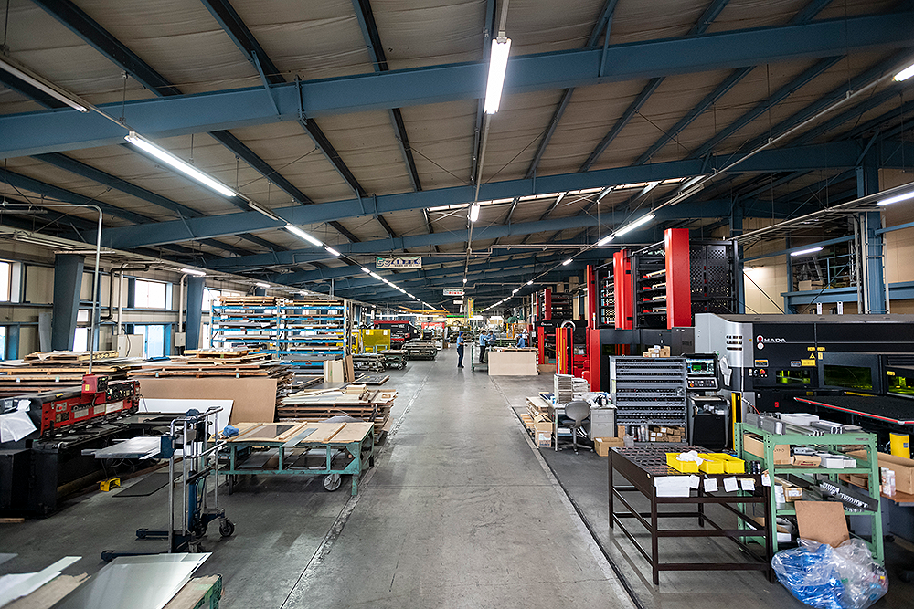
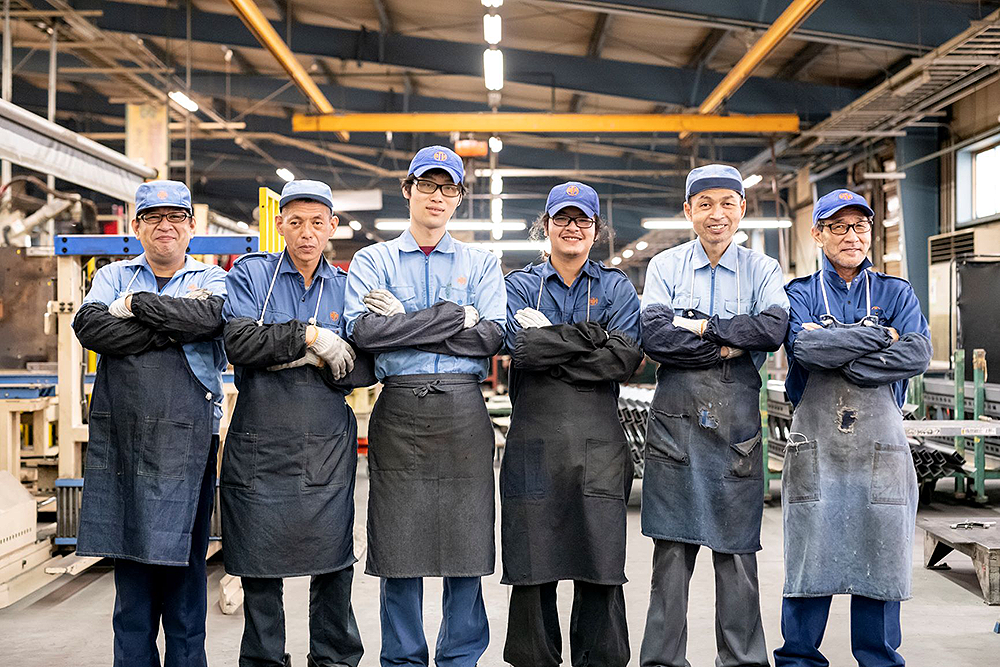

経営理念
私達は仕事への責任と誇りを道標（みちしるべ）に、
全従業員の物心両面の豊かさを追求すると共に、
社会の進歩発展に貢献する。


5つの基本方針
| 人を大切にする | 目配り・気配り・心配りを実践し、思いやりの心で応対します。 |
|---|---|
| チャレンジ | 私達は常にチャレンジし続け、チャレンジャーに寛容な姿勢である。 |
| ユニークな価値 | 当たり前であることに常に疑問を持ち、新しさはあるのか問い続ける。 |
| つよく | 新たな事を実現するために「人・組織・会社」として強さを持ち続ける。 |
| おもしろく | 相手を否定せず「どうしたらできるのか」前向きに取組み愉しむ。 |
5つの行動理念
| 製品・サービス | 顧客の立場になり製品の利用状況を常に調査・分析・検証を徹底し常に最高の「誠意・知恵・技術」で期待を超える新しい価値を提供する。 |
|---|---|
| 顧客・取引先 | 全ての お客様・取引先と一生お付き合いができる関係作りを目指す。 |
| 社員 | 一人ひとりが全力を尽くし最後まで結果に責任を持ちます。 |
| 会社 | 社員が進化しながら豊かな人生を実現できる高ES職場を目指します。 |
| 地域・社会 | 地域の方々と信頼を築き、明るい地域社会作りに貢献する。 |
ビジョン
小さくともキラリと光る長村製作所
個人情報保護方針
株式会社長村製作所（以下 当社といいます。）は、個人情報保護法その他関連法令等を遵守し、当社の保有するお客様を特定できる情報（以下、個人情報といいます）を適正に取り扱うことが企業の重要な社会的責務であるとの認識に立ち、以下のとおり個人情報保護に関する基本方針を定めております。
１．個人情報の取得
当社は、適法かつ公正な手段によって個人情報を取得します。
２．個人情報の利用
当社は、特定した利用目的の範囲内で、業務上必要な限りにおいて個人情報を利用します。また目的外の利用は行わず、そのために必要な措置を講じます。
３．個人情報の提供
当社は、本人の同意がある場合、法令に基づく場合を除き、個人情報を第三者に提供しません。
４．個人情報の安全管理措置
当社は、取り扱う個人情報の紛失、き損、改ざん及び漏洩等の防止その他の個人情報の安全管理のために必要かつ適切な措置を講じます。
５．個人情報の開示・訂正等について
当社はご本人から自己の個人情報についての開示の請求がある場合、速やかに開示を致します。その際、ご本人であることが確認できない場合には、開示に応じません。
６．個人情報保護に関する法令等の遵守
当社は、個人情報保護に関する法令、国が定める方針及びその他規範を遵守します。